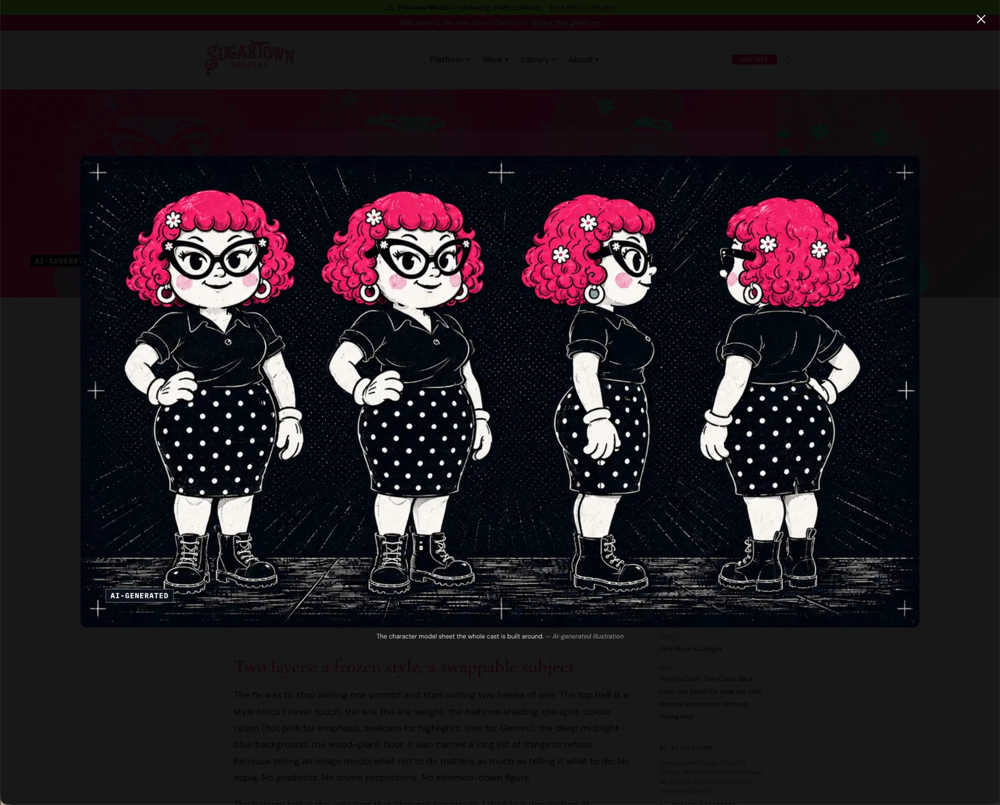

AI-GENERATED
ST-205 · Carousel lightbox navigation
Issue #205. Phase 0 visual spec. Loads the real Pink Moon files (tokens.css, theme.pink-moon.css), so the toggle shows both themes with the site's own tokens. Class names are production names; every new class is in the naming table.
Status: awaiting Bex sign-off. No code in
apps/web/src/ until the Phase 0 boxes are ticked. Open decisions are in §8.1. Interactive prototype (after)
Click a peeking slide: the carousel advances, as in #201, and the lightbox does not open. Click anywhere on the centre (active) image, or its expand circle: the lightbox opens on that slide, linked or not. The link now lives in the lightbox. Try Next, Prev, the arrow keys, Escape, and Close. After closing, the carousel is on the slide you left on. Slide 1 has no link, slides 2 and 3 do.
The Cast, Across the Catalogue
Event log: (none yet)
2. Before (live today)
BEFORE A real screenshot of the live site, 2026-11-06: the lightbox opened from the first slide of the Cast carousel on /articles/becky-b00p-illustration-prompt-system. The whole viewport is shown, not a fragment.

What is there today: a close button (top right), the image with its AI-GENERATED label, a caption with the credit. What is missing: previous and next buttons, and an "n / total" counter, because the lightbox was handed a list of one image (the only unlinked slide).
3. After, mobile (375px wide)
AFTER A prototype of the lightbox alone at phone width. The lightbox is a fixed full-screen overlay, so this is the whole surface; the page behind it is dimmed to 90% black.
4. Behaviour annotations (nav surface, all six)
| Item | Spec |
|---|---|
| Active state | The lightbox shows one image at a time; currentIndex is the active one. The counter reads "n / total" (white 50%, unchanged). Carousel active slide and dot follow it on close. |
| Hash/anchor behaviour | None. The lightbox does not write to the URL. |
| Scroll-spy | No. On close the carousel scrolls to the lightbox's current slide (scrollIntoView, centred), and the existing observer updates the dot. |
| Sticky/fixed | Overlay is position: fixed; inset: 0 (unchanged). Body scroll locks while open and the scroll position restores on close (unchanged). |
| Mobile collapse | Below 768px the buttons stay 44px (was 36px, below the target size) and sit 0.25rem from the screen edge, over the image margin, never over the caption. The "Read" link wraps to two lines if needed. |
| Click side-effects | Peek slide click: unchanged from #201, advances the carousel and never opens the lightbox or follows a link. Click anywhere on the active image: opens the lightbox at that slide, for linked and unlinked slides alike (cursor is zoom-in). A linked slide's link is no longer followed from the carousel; it is the "Read:" link in the lightbox. This changes #201, where a click on the active linked slide followed the link. Expand control: the visible cue and the keyboard route to the same action; shown on the active slide only. The carousel no longer wraps the active image in the link, so tab order holds the arrows, the expand button and the dots. Next/Prev: wrap at the ends (unchanged). Keys: Left/Right, Escape (unchanged). Backdrop click: closes (unchanged). "Read" link: follows the slide's link, honouring openInNewTab, and the lightbox stays open behind a new tab or closes on same-tab navigation. Focus: lightbox focuses Close on open (unchanged) and returns focus to the expand control on close (new). |
5. Lightbox list and ordering rules
| Gallery | Lightbox list | Opened by |
|---|---|---|
| Carousel | Every slide in order, linked or not | Click anywhere on the active image, or the expand control (linked and unlinked) |
| Grid and masonry | Unchanged: unlinked images only (linked images still follow their link) | Click on an unlinked image (unchanged) |
| Inline article image | One image, no nav (unchanged) | Click (unchanged) |
6. Contrast, measured on the overlay
Overlay is 90% black, so the effective background is #1a1a1a at worst (a white page behind). These are hand-computed for this vspec; they are re-measured at implementation.
| Pair | Ratio (approx.) | Verdict |
|---|---|---|
| Caption white 85% on overlay | about 12:1 | Pass |
| Counter white 50% on overlay (existing, unchanged) | about 5:1 | Pass, narrowly |
| Credit white 55% on overlay (existing) | about 6:1 | Pass |
| "Read the post" white text on overlay | about 17:1 | Pass |
| Nav and Close: 2px white ring on overlay, near-black fill | about 17:1 against the overlay (non-text needs 3:1) | Pass |
7. Class naming table (for sign-off)
| Class | Closest existing pattern | Decision |
|---|---|---|
.navButton, .prevButton, .nextButton | Exist in ImageLightbox.module.css; same look as #201 .carouselArrow | Restyle, no new class |
.counter, .closeButton | Exist | Restyle (counter colour, close ring) |
.carouselExpand | None. Nearest is .carouselArrow (same circle button) | New class, shares the button recipe |
.captionLink | None in the lightbox. Named for its role, not "post link", so it works for any linked image | New class |
Component choice audit: the DS IconButton fits the expand, close and nav buttons (44px target, focus ring) and is audited in IconButton.audit.stories.tsx. Decision at implementation: use it for all four if it supports the white ring on a dark fill and the 44px size, otherwise restyle the local classes. The link cue is a text link, so the DS Button or a plain anchor with a token border; no new component. ImageLightbox gains props, not a fork: images, initialIndex, onIndexChange, onClose, and per-image link read from the image object.
Tokens: only existing ones (--st-color-scrim-backdrop-heavy, --st-color-white, --st-color-white-85, --st-color-white-55, --st-color-pink, --st-radius-md, --st-font-family-mono). No new token proposed. The 44px size and 2px ring are literal in this prototype and map to existing size and border tokens at implementation (grep tokens.css first).
8. Decisions (2026-11-06)
- Link label: "Read: {linked post title} ↗", from the link's own label. Decided.
- Link position: below the caption. Decided.
- Opening the lightbox: click anywhere on the active image opens it, linked or not (Bex). Peek click still advances. The expand circle stays as the visible cue and keyboard route, always visible on the active slide. Side effect to confirm: a linked slide's link is reached through the lightbox, not directly from the carousel.
Phase 0 checklist
[ ] vspec reviewed [ ] class table approved [ ] component choice audit approved [ ] open decisions answered